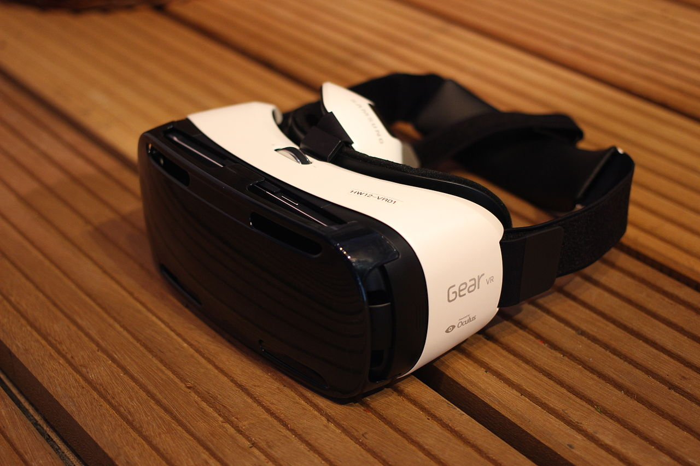

The Samsung Gear VR is a mobile virtual reality headset developed by Samsung Electronics, in collaboration with Oculus, and manufactured by Samsung. The headset was released on November 27, 2015. When in use, a compatible Samsung Galaxy device (Galaxy Note 5, Galaxy S6/S6 Edge/S6 Edge+, Galaxy S7/S7 Edge, or Galaxy S8/S8+) acts as the headset's display and processor, while the Gear VR unit itself acts as the controller, which contains the field of view, as well as a custom inertial measurement unit, or IMU, for rotational tracking, which connects to the smartphone via micro-USB. The Gear VR headset also includes a touchpad and back button on the side, as well as a proximity sensor to detect when the headset is on. The Gear VR was first announced in September 2014. To allow developers to create content for the Gear VR and to allow VR and technology enthusiasts to get early access to the technology, Samsung had released two innovator editions of the Gear VR before the consumer version.
